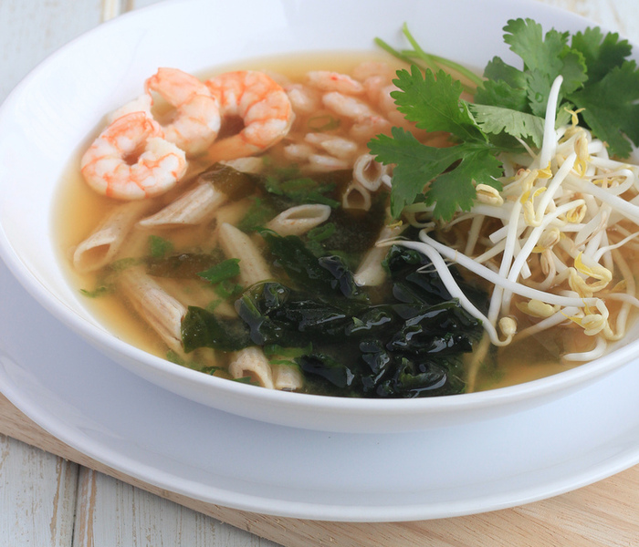

Sopa Japonesa

Ingredientes:
- Macarrão: 200g
- 400g de camarões pequenos
- 200g de camarões médios
- 2,5 litros de água filtrada
- 2 sachês de dashi
- 2 sachês de missoshiru
- Flocos de de alga marinha (pouco)
- Sal a gosto
- Folhas de coentro
Modo de Preparação:
Cozinhe o macarrão em água bem salgada até ficar al dente. Escorra, lave com água fria,
escorra novamente e reserve.
Cozinhe os camarões em água fervente, cerca de 2 a 3 minutos os médios e 5 a 7 minutos os
pequenos.
Enquanto estiver cozinhando, com uma concha, remova a espuma que pode se formar na
superfície.
Filtre a água do cozimento, coloque-a na panela e volte para o fogo (sem os camarões). Se
quiser, acrescente mais água.
Com a água levemente fervente, adicione o dashi e o missoshiru e misture até a sopa ficar
homogênea (cerca de 1 a 2 minutos).
Desligue o fogo, acerte o sal e acrescente a cebolinha.
Coloque os camarões e o macarrão no fundo de cada prato, despeje a sopa e coloque a alga, o
broto de feijão e algumas folhas de coentro.
As algas hidratam rapidamente, em cerca de 1 a 2 minutos, ajude misturando um pouco.